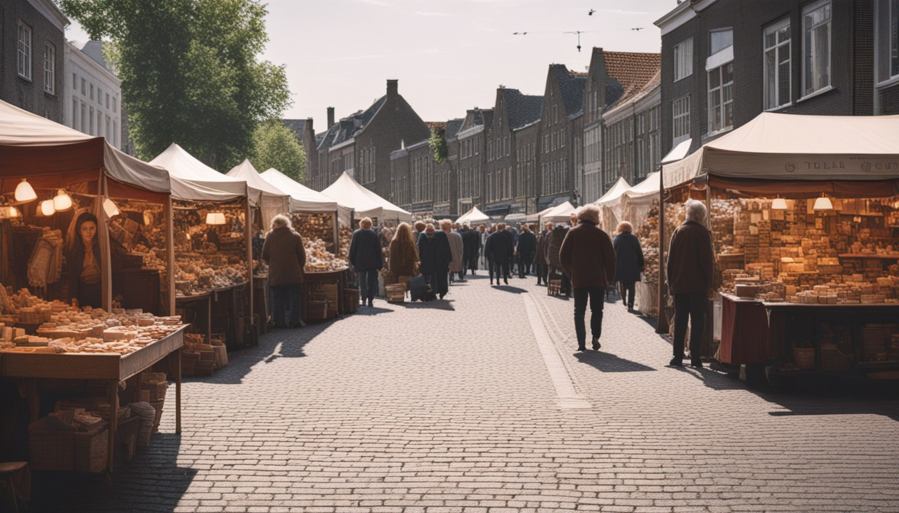
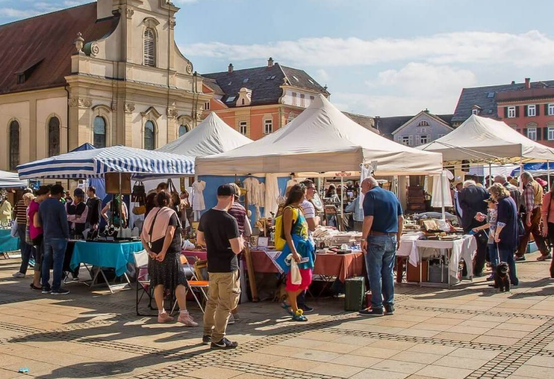

Gouda is a bustling city
With a variety of exciting events throughout the year! In addition to the famous Gouda Cheese
Market, where you can experience the traditional cheese weighing and trading ceremony, there are other fantastic
events to enjoy. The flea market is a treasure trove for bargain hunters, offering a wide range of unique items
and antiques. And on shopping Saturdays, the city comes alive with special promotions and discounts, making it
the perfect time to explore the charming shops and boutiques. From the lively atmosphere of the cheese market to
the thrill of the flea market and the excitement of shopping Saturdays, Gouda has something for everyone.
Gouda Cheese Market

The Gouda Cheese Market is a must-visit attraction in Gouda! It takes place every Thursday
from April to August, where you can witness the traditional cheese weighing and trading ceremony. Immerse
yourself in the rich history of Gouda’s cheese making traditions and indulge in the delicious flavours of local
Gouda cheese. Don’t miss the opportunity to experience the vibrant and lively atmosphere of the Gouda Cheese
Market.
Flea Market

The flea market in Gouda is a treasure trove for bargain hunters! You’ll find a wide variety
of unique items and antiques, from vintage clothing to collectibles and everything in between. Stroll through
the market, browse the stalls, and uncover the hidden gems that you won’t find anywhere else. Whether you are a
seasoned collector or just looking for something special, the flea market in Gouda is a must visit destination
for all shopping enthusiasts!
Shopping Saturdays

Shopping Saturdays in Gouda are a shopaholic’s dream come true! On these special days, the
city comes alive with vibrant energy and exciting promotions. Explore the charming streets and boutique shops,
where you’ll find a wide range of fashion, accessories, home goods, and more. Take advantage of the discounts
and deals offered by participating stores, making it the perfect time to update your wardrobe or find unique
gifts. Whether you are a fashionista or simply enjoy the thrill of shopping, Gouda’s Shopping Saturdays are not
to be missed!